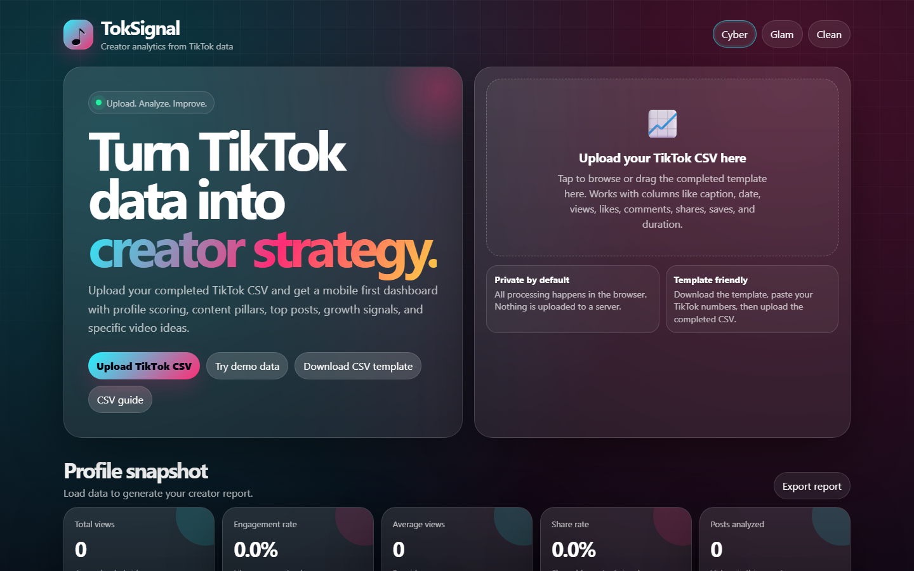

case study / creator tools
TokSignal Creator Analyzer
A mobile-friendly TikTok analytics dashboard that turns a creator's own CSV export into profile scoring, content pillars, top-post analysis, and specific next-video ideas — entirely in the browser.
The problem
Creators have their own performance data — TikTok hands it over as an export — but almost no way to read it. The tools that do exist want an account connection, a subscription, or your data on their server. I wanted to answer one question — what's actually working on this account? — with something anyone could use in ten seconds, on their phone, without trusting a stranger's backend.
TokSignal is a static page: upload (or paste) your TikTok CSV, and it computes a creator score, engagement patterns, content pillars, and concrete video ideas — all client-side. There is no server to trust because there is no server.

One hard decision
CSV upload instead of the TikTok API. The API route meant an app review, an approval wait, and a dependency I don't control on a project I built to answer one question. CSV meant anyone can use it in ten seconds with data they already have, and it stays entirely in the browser so nothing leaves their machine. It also means the tool is only as fresh as the export you feed it.
What I'd do differently
I set the scoring weights from what I assumed mattered, then validated them afterward against creators I already knew were performing well. I should have done that in the other order. Two of the weights were near-useless and I only found out by checking my own conclusions.
Under the hood
- Pure HTML/CSS/JavaScript static site — no build step, no backend, deployed on Netlify
- CSV parsing and template support for TikTok's export format, plus paste-in import and a demo dataset
- Creator scoring, engagement-rate analysis, content-pillar detection, and next-video suggestions computed client-side
- Mobile-first layout with selectable themes, built to be used from the phone where creators actually live